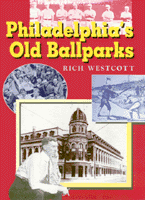

"An old ballpark has an allure that cannot be dismissed. It evokes warm memories while suggesting another era when baseball was a kinder, gentler game. One cannot simply forget it. It's grip is far too strong."
"An old ballpark has an allure that cannot be dismissed. It evokes warm memories while suggesting another era when baseball was a kinder, gentler game. One cannot simply forget it. It's grip is far too strong."


 "An old ballpark has an allure that cannot be dismissed. It evokes warm memories while suggesting another era when baseball was a kinder, gentler game. One cannot simply forget it. It's grip is far too strong."
"An old ballpark has an allure that cannot be dismissed. It evokes warm memories while suggesting another era when baseball was a kinder, gentler game. One cannot simply forget it. It's grip is far too strong."

|  |
Philadelphia's Old BallparksRich Westcottcloth EAN: 978-1-56639-454-3 (ISBN: 1-56639-454-6) |
"This is a brilliant story written by a baseball writer in love with Philadelphia's old ballparks and the players. The parks seem to talk to you as the book describes the history of baseball development in Philadelphia and the U.S.A. If you love baseball, it's a page turner."
—Danny Litwhiler, former Phillies star
Philadelphia's rich baseball heritage as seen through its baseball parks is vividly brought to life in this colorful and anecdotal book. Experienced sportswriter Rich Westcott once again dives into a labor of love, taking us back in time to an era when Philadelphia's ballparks were as famous and as much a part of the game as the teams that took the field.
Philadelphia's baseball history goes beyond Shibe Park. Philadelphia's Old Ballparks is both a documentary and an oral history, providing detailed descriptions of all of the old professional parks and the many teams that played in them, including Baker Bowl, with its right field wall so close to home plate, it prompted sportswriter Red Smith to quip, "It might be exaggerating to say the outfield wall casts a shadow across the infield. But if the right fielder had eaten onions at lunch, the second baseman knew it." Shibe Park is also well-documented with its idiosyncracies, as are the others. The recollections of dozens of people—players, owners, vendors, ushers, grounds keepers, and fans combine to recreate the world that was held within those walls.
Excerpt available at www.temple.edu/tempress
"Rich's exhaustive research is evident throughout. His interviews with fans and those who lived, worked, and played in these baseball stadiums make for a fascinating read spiced with humorous and incredible stories about baseball's monuments of the past."
—Harry Kalas, long-time Phillies broadcaster
"I love the smell of creosote in the afternoon...Westcott's reconstruction of ballyards past suggests the Sunday aromas of the Connie Mack Stadium press box baking in July doubleheader heat. Under the bubbling tarpaper of the old firetrap was mingled the aroma of sweating scribes, dogs, and burgers sizzling on Mike and Laura's grill and the toxic haze from the tobacco we used to inhale in that innocent time."
—Bill Conlin, sports columnist, Philadelphia Daily News (and the Phillies beat writer the final five seasons of Connie Mack Stadium
"Rich Westcott has written a very interesting book. I couldn't put it down. I think the book is terrific, just like I thought Connie Mack Stadium was terrific. After reading the book, I learned I'm walking in some pretty good company. Philadelphia's Old Ballparks is really well done. I enjoyed it thoroughly. It gets an A plus from me."
—Dick Allen, former Phillies star
"For readers who went to ball games after the Phils moved out of Connie Mack at the end of the 1970 season, the book is a reminder of what baseball parks once were."
—The Philadelphia Inquirer
Foreword – Allen Lewis
Introduction
1. Early Parks: Philadelphia�s Oldest Pro Baseball Fields
2. Recreation Park: Birthplace of the Phillies
3. Columbia Park: First Home of the Athletics
4. Philadelphia Park/Baker Bowl: Unusual in Almost Every Way
A Grand Opening •
The Wall of Horrors •
A Hitter�s Paradise •
Special Effects •
Not Much Was Ever Constant •
Outside the Park •
The Paying Customers •
Gentlemen of the Press •
The Best of Times •
Some Other Memorable Days •
The Great Catastrophes •
A Touch of Comedy •
Beautifully Decrepit •
Not Just a Baseball Park •
The End Finally Arrives
5. Shibe Park/Connie Mack Stadium: An Enduring Favorite
A Park for the Masses •
The Big Day Arrives •
Some Things Changed •
Idiosyncrasies •
A Wall of Its Own •
A Player�s Park •
The Phillies Arrive •
The World Series •
All-Star Games •
Great Games by the Visitors •
Other Memorable Games •
Around the Edges •
Inside Jobs •
As Tough As There Is •
The Fourth Estate •
A Park for Many Occasions •
Farewell to a Ballpark
Bibliography
About the Author
Index
 | Rich Westcott is a writer and sports historian and a veteran of more than 40 years as a working journalist. He is a leading authority on the Phillies, and for 14 years was editor and publisher of Phillies Report. A native Philadelphian, he is the author of 18 other books, including Veterans Stadium, Philadelphia's Old Ballparks, The Phillies Encyclopedia (with Frank Bilovsky), and A Century of Philadelphia Sports. Westcott has seen or covered all the major teams in Philadelphia, including the Warriors and 76ers. |
Baseball in America, edited by Rich Westcott.
© 2015 Temple University. All Rights Reserved. This page: http://www.temple.edu/tempress/titles/1273_reg.html.